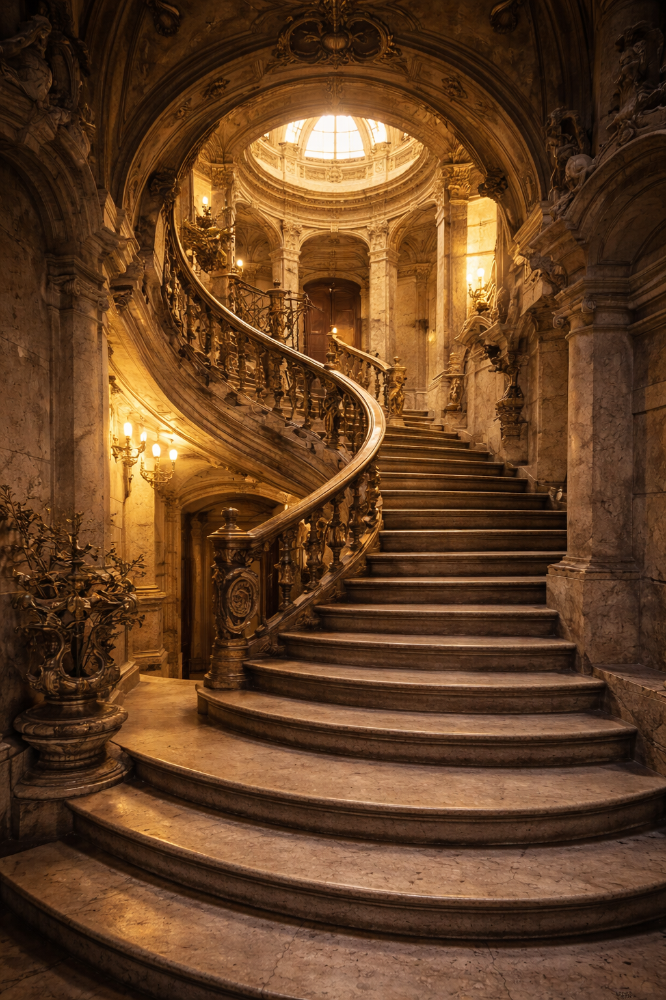

Historia oculta de Buenos Aires
Descubre los fascinantes secretos y las historias olvidadas de la ciudad.
Learn MoreDescubre el alma oculta de Buenos Aires
Explorar ToursDescubre los fascinantes secretos y las historias olvidadas de la ciudad.
Learn MoreExplora los majestuosos edificios y las leyendas que forjaron Buenos Aires.
Learn More
Sumérgete en el misterioso mundo de los símbolos masónicos y sus significados ocultos.
Learn More